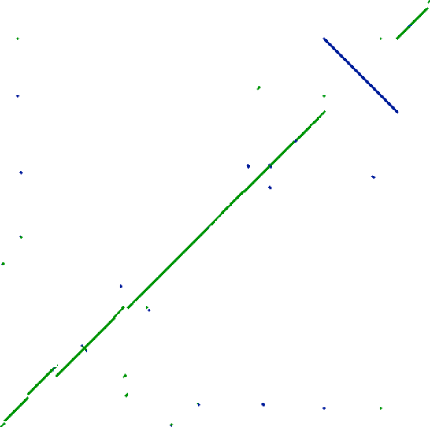
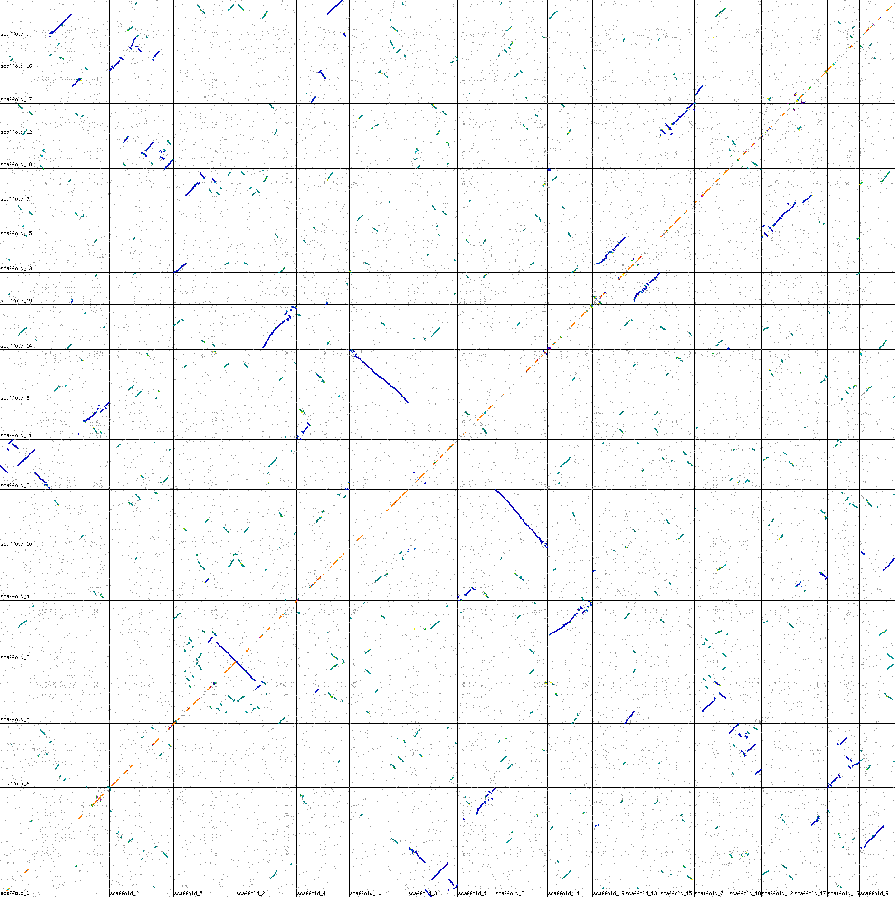
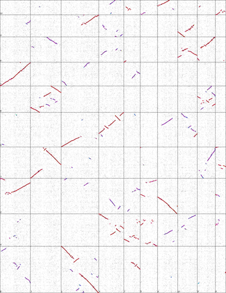

Sequence Alignment Practice
Sequence Alignment Practice
Which EMBOSS programs can we use to do sequence alignments?
$ wossname alignment
Which can we use to do dotplots? And local and global alignments?
Which program is specific to align mRNA?
Dotplot
Gene structure
We can study the exon and intron gene structure graphically by using the graphical alignment program dotmatcher. dotmatcher can create dotplots in EMBOSS.
Let’s compare the Arabidopsis genomic region AT3G52905.1 with one cDNA.
$ dotmatcher AT3G4905.1.genomico.fasta AT3G4905.1.cdna.fasta
Why is there so much noise in the result?
Is there any parameter that we can use to improve the result?
$ dotmatcher -windowsize 15 -threshold 23 AT3G4905.1.genomico.fasta AT3G4905.1.cdna.fasta
Or even more restrictive
$ dotmatcher -windowsize 15 -threshold 35 AT3G4905.1.genomico.fasta AT3G4905.1.cdna.fasta
Why is the main diagonal split in several segments?
Genes in close species
We can study homologous regions between two proteins, one from human and another from dog. Using dotmatcher we will compare the CDS the human and dog genes.
-
Are the genes similar along all the CDS?
-
Why some regions could be more similar than others?
Tandem repeats
Graphical alignments are particularly well suited to study repeated or inverted regions. As an example we will study the repeats found in the human zinc finger Q9P255
Align the protein against itself using dotmatcher.
-
How do you interpret the resulting pattern?
-
How are the repeats distributed? How many repeats are there?
-
Change the threshold value and study how it affects the graphical alignment.
-
Look for the domain structure of the Q9P255 in Uniprot.
Genomic level dotplots
Dotplots can be used to detect long genomic structural variants. There are several software tools to do it, for instance the web service SynMap.
Running these analyses is slow, so we have already run them and you have here the results.
Alignment the complete genome of two E. coli K12 substrains DH10B and VSW3110

-
Which is the most striking difference?
-
Are there any other differences?
-
How can you interpret the dots outside the main diagonals?
Ploplar genome aligned against itself by comparing just the CDSs. The black vertial and horizontal lines divide the chromosomes.

- How do you interpret the result?
A graphical alignment of the maize vs sorgum genomes. Vertical and horizontal lines divide the chromosomes.

- How do you interpret the result?
Virus repeats dotplot
An endogenous retrovirus 12 kb long and has an inverted repeat of 250 pb located at both ends. Draw a dotplot comparing its sequence against itself.
Interpret the result of the dotplot between the sequences A and B

PCR primer dotplot
You have amplified a 200 pb PCR fragment using two primers (18 and 20 pb). Draw the dotplot between the sequences of the fragment and the primers
Gene structure dotplot

-
Draw a dotplot between the genomic sequence and a full length cDNA of this gene.
-
Draw a dotplot between the genomic sequence and the CDS of this gene
Local alignments
DNA sequence alignment
We are going to do a local alignment between two DNA sequences: sequence1 and sequence2.
In the command line we would write:
$ matcher sequence1.fasta sequence2.fasta stdout
-
How similar are the sequences?
-
Are they similar in all its length?
Let’s align the reverse and complementary sequence:
$ matcher -sreverse1 sequence1.fasta sequence2.fasta stdout
How similar are the sequences? Why is different from the previous attempt?
What would happen if we were to run the following command (Try to answer it before executing the command)?
$ matcher -sreverse1 -sreverse2 sequence1.fasta sequence2.fasta stdout
Homologous proteins
We can create the best alignment between two homologous proteins from two different species, once we have decided a score system. We also could use these methods to align homologous proteins within a species.
As an example we will align a human and canine cyclin using matcher or water.
$ matcher CDKL4.human.fasta cyclin.dog.fasta stdout
How similar are the sequences?
Is this alignment local or global? Why?
Conserved regions
Usually not all regions of two homologous proteins vary in the same degree. There are regions that are more conversed and regions that are less conserved.
We can look for the more conserved regions by doing a local alignment.
Align the human and Aedes mosquito frataxins using matcher or water.
$ matcher frataxin.human.gb frataxin.aedes.gb stdout
-
Is the alignment local?
-
Why are there regions that has not been aligned?
Why some regions are more similar than others?
- Is there anything special with aminoacids 92, 100, 101, 104, 108, 111, 112, 122 and 124 in the human frataxin?
Open in a text editor the genbank files for the human and mosquito proteins and check the annotation of those aminoacids.
Let’s try to modify the parameters given to the aligner. Let’s do the alignment with the parameter gapopen set to 4.
$ matcher frataxin.human.gb frataxin.aedes.gb stdout -gapopen 4
- Is this alignment better or worse?
Every score set will produce more than one alignment, but matcher will only show, by default, only one alignment. Ask matcher to show 3 alternative alignments
$ matcher frataxin.human.gb frataxin.aedes.gb stdout -alternatives 3
Why the first alignment is the best one?
Gobal alignments
We could use an algorithm that aligns both sequences in its whole length.
Redo the alignments from the last two exercises using needle.
$ needle frataxin.human.gb frataxin.aedes.gb stdout -auto
- Is this alignment better or worse than the previous one?
The global alignments should only be used when we are sure that the two sequences are similar in all its length. These algorithms will give a very bad result if there are regions that are not similar between the sequences.
Genic structure 1
We have aligned a cDNA and the genomic sequence of a gene with matcher. Do you think that it is a good approach? Could you think on any problems regarding the approach?
560 570 580 590 600
cDNA TTCAGGAGTATTTAGATTACGCGAACAGGTATGTAAACACTGAGCCAGCA
: ::::::::::::::::::::::::::::::::::::::::::::::::
GENO TGCAGGAGTATTTAGATTACGCGAACAGGTATGTAAACACTGAGCCAGCA
1550 1560 1570 1580 1590
610 620 630 640 650
cDNA GAGTAAAAGGAAACGGGTAATGACAAAATAGGGAAGCCGCTAGTTTCGGA
::::::::::::::::::::::::::::::::::::::::::::::::::
GENO GAGTAAAAGGAAACGGGTAATGACAAAATAGGGAAGCCGCTAGTTTCGGA
1600 1610 1620 1630 1640
660 670 680 690 700
cDNA TATATGAATATAATGATGCTTGATTTGTTTTGACATTATCTATGTGTACA
::::::::::::::::::::::::::::::::::::::::::::::::::
GENO TATATGAATATAATGATGCTTGATTTGTTTTGACATTATCTATGTGTACA
1650 1660 1670 1680 1690
710 720 730 740
cDNA AAGACATCTTGCATCTTTTAAGAAATTCGTTTTTCGCTGC
::::::::::::::::::::::::::::::::::::::::
GENO AAGACATCTTGCATCTTTTAAGAAATTCGTTTTTCGCTGC
1700 1710 1720 1730
Genic structure 2
Determine the genic structure of the AT3G4905 Arabidopsis gene. You need to dermine where a the exons and introns located and which are the conding sequences. You have part of the genomic sequence, a cDNA and the CDS for that cDNA.
EMBOSS has a program created just with the aim of alignming messenger RNA with a genomic sequences. These kind of alingments are special:
- They are very similar in the regions share by the genome and the mRNA
- They have long gaps (the introns)
- The exons should be surronded by some specific sequence intronic sequences.
Let’s align the genomic sequence of an Arabidopsis gene AT3G4905 with a cDNA.
$ est2genome AT3G4905.1.cdna.fasta AT3G4905.1.genomico.fasta stdout -auto
- How many introns are there?
To get the alignment report with the complete sequence:
$ est2genome AT3G4905.1.cdna.fasta AT3G4905.1.genomico.fasta stdout -align -auto
-
Would needle or matcher create the same alignment?
-
Compare the sequence of the CDS of this cDNA with the sequence of the genome.
-
Is the alignment similar or different to previous one?. Why?
-
Do the alignment between CDS and mRNA. Which conclusions could you reach?
Protein alignment
The alignment between the SOX9 and NHE-RF2 proteins gave this result. could you infer that this proteins are homologues? Is this region a conserved domain? Check your answers in the databases.
#=======================================
#
# Aligned_sequences: 2
# 1: AHA92033.1
# 2: XP_016879383.1
# Matrix: EBLOSUM62
# Gap_penalty: 14
# Extend_penalty: 4
#
# Length: 33
# Identity: 12/33 (36.4%)
# Similarity: 13/33 (39.4%)
# Gaps: 0/33 ( 0.0%)
# Score: 49
#
#
#=======================================
330 340 350
AHA920 TAATPAGAGHVWMSKQQAPPPPPPPQQPPPAPP
: :: : : :: : :: .::
XP_016 TPATCCHCAAVMARSGSATPPARAPGAPPRSPP
150 160 170 180
bl2seq
An often used program to align two sequences is bl2seq. We are going to use a web service to align with bl2seq.
Blast uses a different algorithm to the software used before in this practice. This algorithm is faster, but it is not guaranteed that we will get the best alignment.
Bl2seq is a good alignment method when the sequences are large and the other methods won’t produce a solution in a reasonable time. Blast is used more often to compare one sequence with a whole database of sequences.
Compare the blast result with the previous genomic vs cDNA alignment.
- How many alignments have we obtained?
matcher vs bl2seq
We have aligned using both matcher and bl2seq a sequence against itself. Could you suggest an interpretacion of the results?
########################################
# Program: matcher
# Rundate: Mon 16 Oct 2017 14:57:26
# Commandline: matcher
# -auto
# -asequence /var/lib/emboss-explorer/output/783917/.asequence
# -bsequence /var/lib/emboss-explorer/output/783917/.bsequence
# -alternatives 1
# -outfile outfile
# -aformat3 markx0
# Align_format: markx0
# Report_file: outfile
########################################
#=======================================
#
# Aligned_sequences: 2
# 1: seq_bi
# 2: seq_bi
# Matrix: EDNAFULL
# Gap_penalty: 16
# Extend_penalty: 4
#
# Length: 250
# Identity: 250/250 (100.0%)
# Similarity: 250/250 (100.0%)
# Gaps: 0/250 ( 0.0%)
# Score: 1250
#
#
#=======================================
10 20 30 40 50
seq_bi TCGCGAAGACATTTAGCAGAACCATTTGTCGTTTCCTCTCGCGATCAGGC
::::::::::::::::::::::::::::::::::::::::::::::::::
seq_bi TCGCGAAGACATTTAGCAGAACCATTTGTCGTTTCCTCTCGCGATCAGGC
10 20 30 40 50
60 70 80 90 100
seq_bi CAGATTCCGTGCTCCGGAGCCAGAAAGTTTCCGCCTTTAAAGAAATGAAG
::::::::::::::::::::::::::::::::::::::::::::::::::
seq_bi CAGATTCCGTGCTCCGGAGCCAGAAAGTTTCCGCCTTTAAAGAAATGAAG
60 70 80 90 100
110 120 130 140 150
seq_bi TAGCTATCTCAGATCCTTCAAATATGGTTGCTTCTCCATTGAGTGTTTTG
::::::::::::::::::::::::::::::::::::::::::::::::::
seq_bi TAGCTATCTCAGATCCTTCAAATATGGTTGCTTCTCCATTGAGTGTTTTG
110 120 130 140 150
160 170 180 190 200
seq_bi CAGATTCCGTGCTCCGGAGCCAGAAAGTTTCCGCCTTTAAAGAAATGAAG
::::::::::::::::::::::::::::::::::::::::::::::::::
seq_bi CAGATTCCGTGCTCCGGAGCCAGAAAGTTTCCGCCTTTAAAGAAATGAAG
160 170 180 190 200
210 220 230 240 250
seq_bi CTCAGAAAGAAATCAAACATTGACCTGATGGCTACAGATTTCCAGAACCT
::::::::::::::::::::::::::::::::::::::::::::::::::
seq_bi CTCAGAAAGAAATCAAACATTGACCTGATGGCTACAGATTTCCAGAACCT
210 220 230 240 250
BLASTN 2.7.0+
Reference: Zheng Zhang, Scott Schwartz, Lukas Wagner, and
Webb Miller (2000), "A greedy algorithm for aligning DNA
sequences", J Comput Biol 2000; 7(1-2):203-14.
RID: Y9B74S2U114
Query= seq_bi
Length=250
Score E
Sequences producing significant alignments: (Bits) Value
Query_163477 seq_bi 462 3e-135
ALIGNMENTS
>Query_163477 seq_bi
Length=250
Score = 462 bits (250), Expect = 3e-135
Identities = 250/250 (100%), Gaps = 0/250 (0%)
Strand=Plus/Plus
Query 1 TCGCGAAGACATTTAGCAGAACCATTTGTCGTTTCCTCTCGCGATCAGGCCAGATTCCGT 60
||||||||||||||||||||||||||||||||||||||||||||||||||||||||||||
Sbjct 1 TCGCGAAGACATTTAGCAGAACCATTTGTCGTTTCCTCTCGCGATCAGGCCAGATTCCGT 60
Query 61 GCTCCGGAGCCAGAAAGTTTCCGCCTTTAAAGAAATGAAGTAGCTATCTCAGATCCTTCA 120
||||||||||||||||||||||||||||||||||||||||||||||||||||||||||||
Sbjct 61 GCTCCGGAGCCAGAAAGTTTCCGCCTTTAAAGAAATGAAGTAGCTATCTCAGATCCTTCA 120
Query 121 AATATGGTTGCTTCTCCATTGAGTGTTTTGCAGATTCCGTGCTCCGGAGCCAGAAAGTTT 180
||||||||||||||||||||||||||||||||||||||||||||||||||||||||||||
Sbjct 121 AATATGGTTGCTTCTCCATTGAGTGTTTTGCAGATTCCGTGCTCCGGAGCCAGAAAGTTT 180
Query 181 CCGCCTTTAAAGAAATGAAGCTCAGAAAGAAATCAAACATTGACCTGATGGCTACAGATT 240
||||||||||||||||||||||||||||||||||||||||||||||||||||||||||||
Sbjct 181 CCGCCTTTAAAGAAATGAAGCTCAGAAAGAAATCAAACATTGACCTGATGGCTACAGATT 240
Query 241 TCCAGAACCT 250
||||||||||
Sbjct 241 TCCAGAACCT 250
Score = 93.5 bits (50), Expect = 4e-24
Identities = 50/50 (100%), Gaps = 0/50 (0%)
Strand=Plus/Plus
Query 151 CAGATTCCGTGCTCCGGAGCCAGAAAGTTTCCGCCTTTAAAGAAATGAAG 200
||||||||||||||||||||||||||||||||||||||||||||||||||
Sbjct 51 CAGATTCCGTGCTCCGGAGCCAGAAAGTTTCCGCCTTTAAAGAAATGAAG 100
Score = 93.5 bits (50), Expect = 4e-24
Identities = 50/50 (100%), Gaps = 0/50 (0%)
Strand=Plus/Plus
Query 51 CAGATTCCGTGCTCCGGAGCCAGAAAGTTTCCGCCTTTAAAGAAATGAAG 100
||||||||||||||||||||||||||||||||||||||||||||||||||
Sbjct 151 CAGATTCCGTGCTCCGGAGCCAGAAAGTTTCCGCCTTTAAAGAAATGAAG 200
Primer search
We have developed two PCR primers: primerf and primerr to amplify the cyclin CDS.
Can you locate the primers in the cyclin sequence?